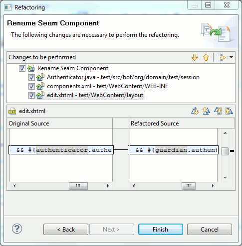

|
Seam component refactoring |
You can now rename Seam components and Seam tools will refactor the name changes in pages.xml, xhtml and java.
The refactoring is available in the context menu of classes that has a @Name annotation, in components.xml and from Seam components view.

Note: This feature is still experimental and we don't cover all possible combinations yet. If you bump into a problem please report it in jira or speak up in the forums.
Related Jira
|